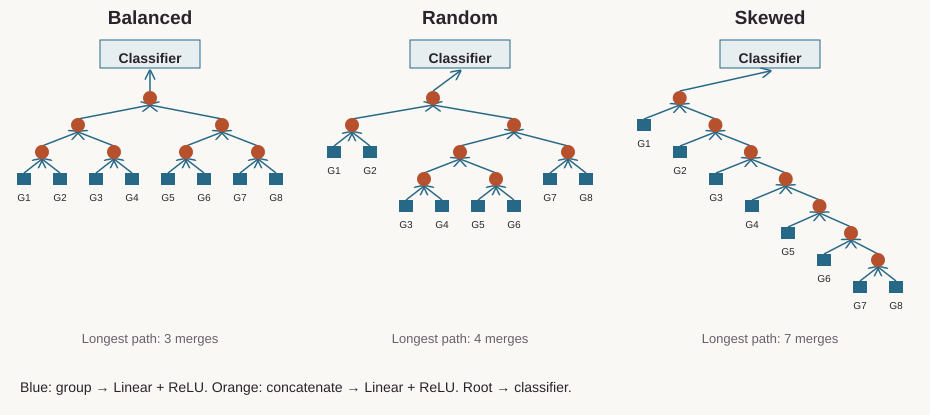
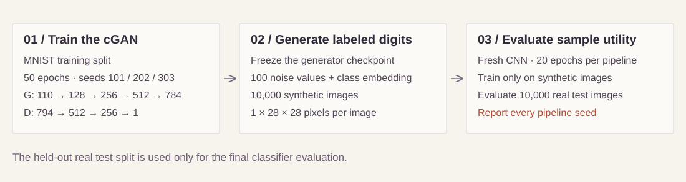
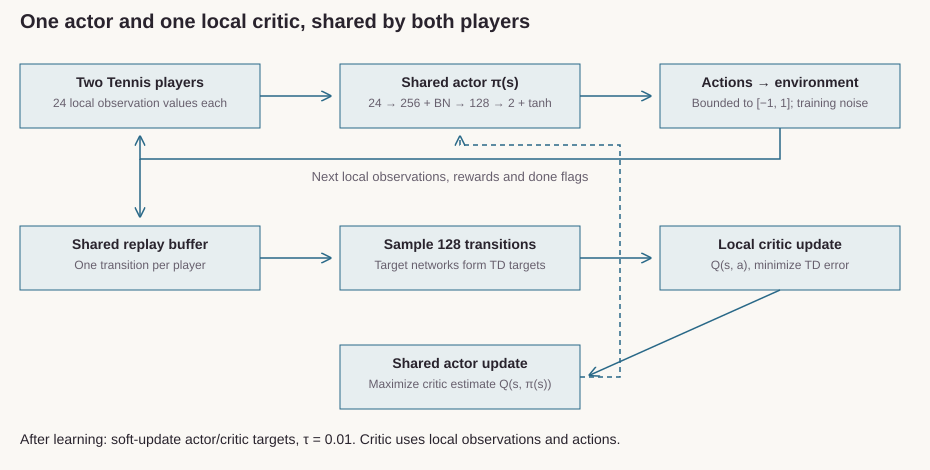

Train balanced, random and skewed recursive networks against dense models. Compare four datasets, feature orders and compute budgets.
Finding. The new 256-model follow-up uses 32 paired seeds on two datasets. Native-order Optdigits favors balanced over random trees by 0.541 percentage points (Holm p = 0.00212). Pendigits and feature-order interactions show no clear effect under the declared analysis.
256 trained models; 32 paired seeds per comparison. Previously inspected datasets. The original 1,120-run study remains in the historical explorer ↗. Open full-size figure ↗How the recursive models combine features

Eight-group schematics from the implemented seed-zero topologies. Blue blocks encode feature groups; orange nodes merge hidden vectors. Satimage uses nine groups. Run the example ↗
02 / Generative deep learning
Can generated digits teach a classifier?
Conditional Handwriting Generation
Train MLP cGAN and conditional residual U-Net diffusion models from scratch, then test what their synthetic images teach a classifier.
Finding. Six complete generator runs, three per model. Mean real-test accuracy after synthetic-only classifier training: cGAN 86.59% ± 7.52 pp; DDPM 96.19% ± 0.36 pp. Every seed is reported; the spread is sample standard deviation, and generator compute budgets differ.
Three pipeline seeds, 10,000 generated images and a fresh 20-epoch classifier per model. Unequal generator compute; three pairs are descriptive. Actual seed-101 samples: cGAN grid ↗ · DDPM grid ↗. Open full-size figure ↗How the cGAN is trained and evaluated

This schematic shows the MLP cGAN branch. The DDPM uses a conditional residual U-Net and 40 epochs. Each pipeline trains a separate synthetic-only classifier; real test images train neither model. Portable weights, fresh FID and measured MPS continuation limits are recorded in the linked results.
03 / Reinforcement learning
Learn a continuous control policy.
Shared-Policy DDPG: Tennis
Train a shared actor–critic policy with replay, target updates and bounded continuous actions. Package the saved policy for CPU inference.
Finding. Six fresh 1,000-episode training runs. Exploration final-test means are 2.1878, 0.0000 and 0.0000; only one of three exceeds its matched random baseline. This does not establish reliable learning. Separately, the historical actor averages 2.1729 over 300 fresh evaluation episodes.
Final tests use 100 episodes per policy and seed. Three trained policies per method; exploratory follow-up and unequal step budgets. The historical explorer ↗ describes the earlier saved actor. Open full-size figure ↗How the shared policy learns

The implemented training path: shared actor, local critic, shared replay and soft target updates. The critic evaluates one player at a time. Run the example ↗
04 / Autonomous systems
Connect sensing to a measurable stop.
Autonomous Braking Simulation
Build a Webots controller that validates sensing, computes time to collision and enters a persistent braking state. Check the run with an independent supervisor.
Finding.Nine fresh Webots scenarios passed, with no obstacle contact and minimum reference distances of 11.05–15.83 m. All start from rest; actual peak speed reached 12.86 m/s. Eighty-six tests cover startup readiness, fault handling and numerical evidence checks.
Obstacle-front-face to vehicle-reference distance, not bumper clearance. One static world and physics seed; same-seed repeat checks are separate. The official fixed prerelease runtime and all pre-fix failures are documented. Open full-size figure ↗Historical Webots frame from the original recorded world. The new nine-case matrix is shown above. Original screenshot ↗
05 / Sensor fusion & AI safety
Govern what reaches the fusion decision.
Sensor Fusion Policy Engine
Apply versioned camera/radar release policies before association and persistence. Compare a deterministic matcher with a learned scorer while retaining decision provenance.
Finding. Across 3,000 synthetic missions, mean association F1 is 0.9416 for the deterministic method and 0.9298 for the learned method.
Three seeds × 1,000 synthetic missions. Dots show seed results. Tap the chart to enlarge.
06 / Applied machine learning
Turn a prediction into a warning policy.
Predictive Maintenance
Build causal sensor features, compare Ridge and random-forest baselines, then select a maintenance threshold on validation engines before replaying test histories.
Finding. Of 100 truncated historical test histories, 35 enter the observed danger window. Five of those receive no warning; 65 histories end before that window.
100 historical test engines; 65 histories end before the danger window. Threshold selected on validation. Tap the chart to enlarge.
Further independent research / Compositional learning
Test how learned components combine.
Recursive Composition Benchmark
Separate tree shape, shared composition and staged training in a four-state permutation task. Nine conditions across five seeds include parameter and compute controls, gradient checks and explicit held-out combinations.
Finding. Balanced staged composition reaches 4.4% held-out-pair accuracy; left staged composition reaches 42.1%. The balanced-tree hypothesis failed in this implementation. All 45 training runs were reproduced.
I work across CNNs, transformers, variational autoencoders, GAN and diffusion experiments, reinforcement learning and applied ML. My focus is architecture choices, learning behavior and meaningful comparisons.
Project documentation identifies methods, contributions, available artifacts and reproducibility limits.
Three anonymized engagements spanning profitability, sales operations and commerce delivery. Each account distinguishes my contribution, the delivered work and the outcome supported by the records.